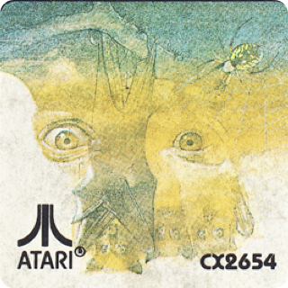
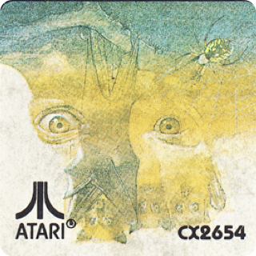
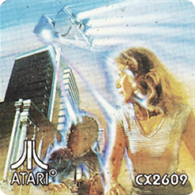
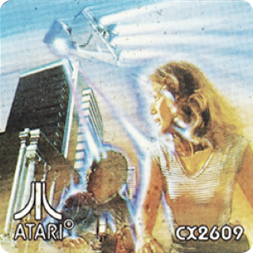

Entertainment Surpassing the
"Real Arcade Game" Experience
The only video game system that is completely self-contained:
- Built-in 9" diagonal high resolution color monitor.
- Advanced display technology with detailed graphics and special effects found only in coin-op arcade games.
- Greater brilliance & higher resolution than conventional television systems.
Completely portable: Operates on AC/DC current with self-contained rechargeable battery power pack & optional cigarette lighter adaptor cord.
Learn more
/feature-2.png)

 


 
